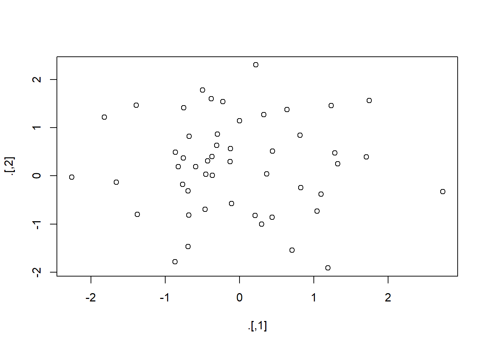

Make sure the following packages are installed:
## Warning: package 'ggplot2' was built under R version 3.5.2## Warning: package 'dplyr' was built under R version 3.5.3## Warning: package 'tidyr' was built under R version 3.5.3Make sure the following packages are installed:
## Warning: package 'ggplot2' was built under R version 3.5.2## Warning: package 'dplyr' was built under R version 3.5.3## Warning: package 'tidyr' was built under R version 3.5.3pryr::object_size gives the memory occupied by all of its arguments (note that built-in object.size does not allow measuring multiple objects so can’t see shared space). This function is actually shown in chapter 18: Pipesassign with the pipe, you must be explicit about the environment## [1] 100try, tryCatch, suppressMessages, and suppressWarnings from base R all also do not work wellOther pipes = ‘T pipe’, %T>% that returns left-hand side rather than right. Will let the plot output, but then continues. Notice that this doesn’t work for ggplot as ggplot does output something

## num [1:50, 1:2] -0.682 -1.389 -0.429 -0.124 -1.372 ...
## Sepal.Length
## 1 5.1
## 2 4.9
## 3 4.7
## 4 4.6
## 5 5.0
## 6 5.4
## 7 4.6
## 8 5.0
## 9 4.4
## 10 4.9%$% allows you to blow out the names of the arguments, I personally prefer using the with function for this instead as I find it to be a little more readable…
## [1] -0.8475514## [1] -0.8475514